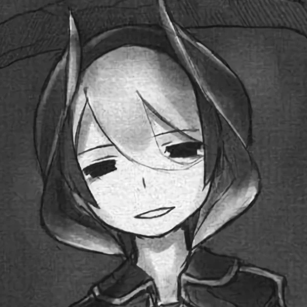
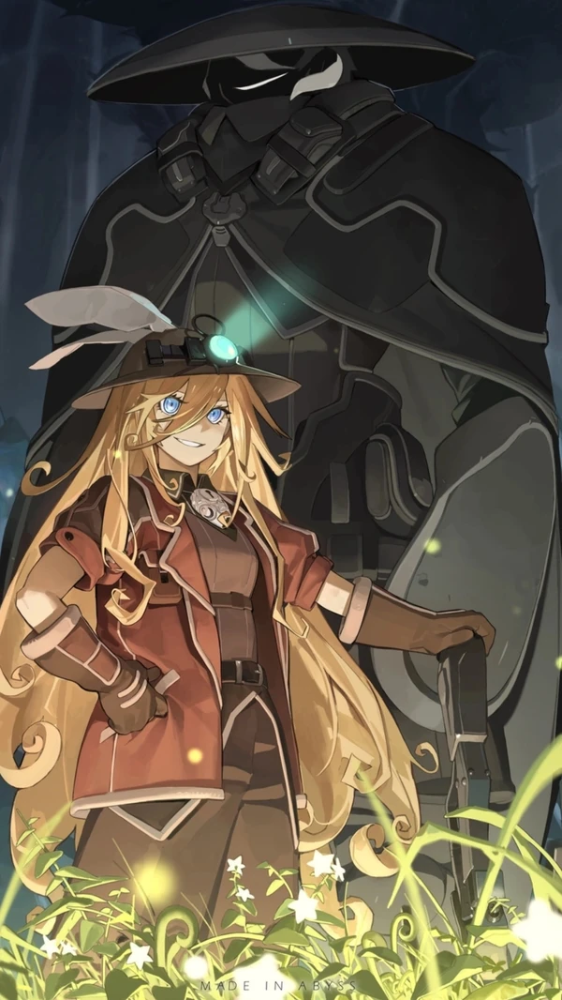

Легендарная Озэн
Имя: Озенオ ー ゼ ン, Непоколебимая揺るぎない
Происхождение: Маde in Abyss
Уровень сил: 7-А | 6-В+
Пол: Женский
Классификация: Человек人間, "Искатель Бездны"ボイドシーカー, Белый Свисток白笛の破壊者: "Непоколебимая"揺るぎない
Возраст: 70+ лет
Умения, силы и способности: Сверхчеловеческие физические характеристики, сопротивляемость (биологическая, физическая, к мгновенной смерти), аура (устрашения, подовления), невероятная сила воли, ловкость, манипуляции светом (светильник), манипуляции нитями (верёвка), манипуляции дымом, воскрешение (тип 2), манипуляции звуком, телепатия (со своим БС), технологические манипуляции (активация "АБВ"), манипуляции сном, реактивная эволюция, адаптивность (к условиям выживания в Бездне)
Слабые стороны: Старость, сама Озен уверяет что уже не так сильна как раньше
Разрушительный потенциал: Уровень горы+ на пробой у Озен, чуть выше в Броне | По крайней мере уровень страны+ на пробой, чуть выше на пробой в Броне
Диапазон: Ближний бой
Прочность/защита: Уровень горы+, чуть выше в броне | По крайней мере уровень страны+, чуть выше в броне
Скорость: Трёхзначные числа Маха+ | По крайней мере сверхсветовая
Сила на подъём: По крайней мере десятк тысячи тонн, вероятно выше (захватами может наносить урон сопоставимому противнику) | По крайней мере миллионы тонн, вероятно выше (захватами может наносить урон сопоставимому противнику)
Сила на удар: Уровень горы+ | До уровня страны+
Выносливость: Высокая
Интеллект: Выше среднего, обладает 50 летним опытом Искателя в области изучения Бездны, в особенности её Реликвий и Фауны, также способна за короткий срок на тренеровать человека, до своего уровня
Боевые навыки: Высокие, является сильнейшим Белым Свистком
Экипировка
Магическая Клетка ╳ [魔法の檻] - артефактアーティファクト, похожий на белый куб, большого размера, данный артефактアーティファクト, обладает способностью возврождать погибших, делая их живыми мертвецами, однако, их невозможно отличить от обычных людей人々. К примеру Озен положила в этот куб, мясо монстра, которого планировали пустить на рагу, и через некоторое время мертвое тело начало ходить, также если оторвать голову, или другую часть тела, то мертвое тело все равно может продолжить существование. Сами трупы по каким-то причинам, тянет ко дну Бездны深淵, причина этого неизвестно.
Белый Свисток ╳ [ホワイトホイッスル] - желанный ранг для всех Искателей Бездны, его получают за проявленные достижения в Бездне深淵, но не обычным способом, его невозможно получить от кого-то, его нужно заслужить. Для получения требуется специальная Артефактアーティファクト, который способен из людей создавать Белые Свисткиホワイトホイッスル, однако в момент создания, человек который превращается в Белый Свистокホワイトホイッスル должен думать об своем самом дорогом друге, возлюбленном и.т, и именно этот человек получит доступ к Белому Свисткуホワイトホイッスル.
Шрифт Жизни ╳ [ライフフォント] - артефактアーティファクト первого уровня. Говорят, что каждый шип дарует силу тысячи человек. Посреди спуска в Бездну深淵, Озен получила серьёзную травму, и у неё не было другого выбора, кроме как использовать "Штифты Жизни" на себе, чтобы выживать. В итоге ей пришлось купить их за большую сумму. С того момента, каждый раз, когда ей попадается очередной "штифт", она покупает его для себя. По словам Озен, она вживила себе 120 шрифтов. Так что, в полне вероятно, что чем больше пользователь "Шрифта Жизни", будет вживлять в себя в себя данный артефакт, то тем сильнее он/она станет.
Небольшой альбом
Немножко открытий
в основном, все Свистки口笛 обучаются навыкам Искателейシーカー в приютах или каких-то специальных школах, в которых дети получают достаточный уровень знаний, которые передаются из поколения в поколение, другими взрослыми Свистками口笛, и на обучение уходит множество лет, а то и несколько десятков лет, однако, подготовку можно ускорить, благодаря личным наставникам, если Красному Свистокуレッドホイッスル удаётся убедить более опытного Свисткаホイッスル (Черного или Белого), то он может повысить свои знания и умения в путешествиях со своим наставником.
все Искателиシーカー имеют свой собственный ранг Свисткаホイッスル, благодаря которому, можно понять насколько он важен и ценен для страны, и насколько опытным является данный Искательシーカー, всего существует пять рангов Искателейシーカー, а обозначается они в виде разноцветных Свистков, которые они носят на своих Шеях. 5 Свистков обозначаются следующим образом: "Красные Свисткиレッドホイッスル": Новичок, "Синие Свисткиブルーホイッスル": Знаток, "Лунные Свистки月の笛": Учителя, "Черные Свистки黒笛": Эксперты, "Белые Свисткиホワイトホイッスル": Сильнейшие Искателиシーカー. Белые Свистки являются Героями своей страны "Оуса", города у Бездны.
Люди人々 смогли со временем адаптироваться к суровым условиям Бездны深淵, и путешествовать в ней практически без каких либо проблем, таким образом они смогли понять где находится находится безопасные места в Бездне深淵, где можно основать свои лагеря, или же каких луче монстров убивать и использовать в пищу, также у Искателейシーカー есть поверье, что если съесть монстра который также едят Людей人々, к нему может передастся его сила (однако эта скорее всего обычная байка).